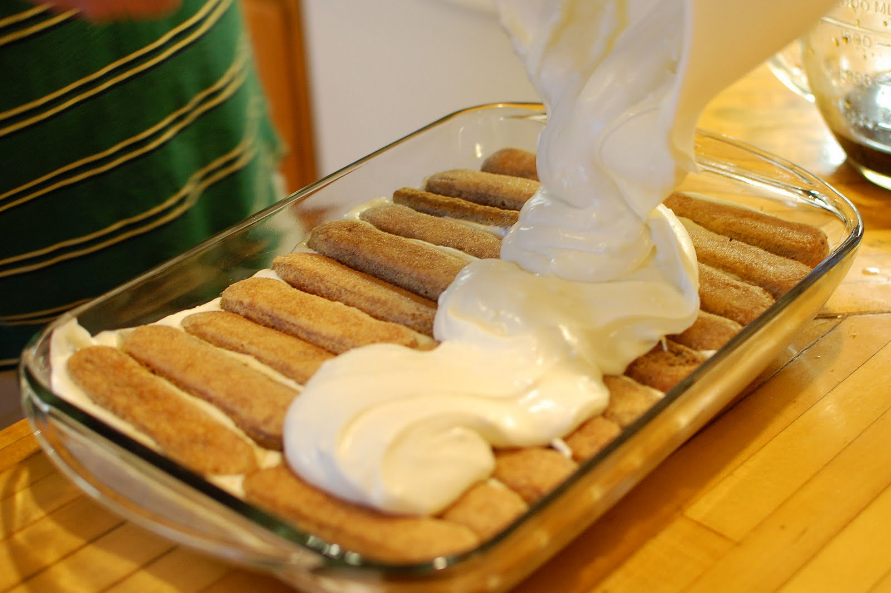

Step 5: Dipping both sides of each ladyfinger into coffee mixture, line bottom of a 13- by 9- by 3-inch baking pan with 18 ladyfingers in 3 rows, trimming edges to fit if necessary. Spread half of mascarpone filling on top. Dip remaining 18 ladyfingers in coffee and arrange over filling in pan.
